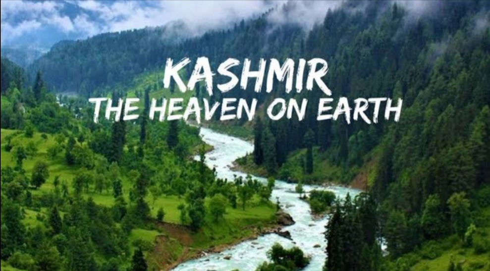

JAMMU KASHMIR
JAMMU KASHMIR
Land of beauty!
History|
|

Jammu and Kashmir (J&K) is a Union Territory (UT) of India, located in the country’s northern part and a global tourist destination. In addition to traditional recreational tourism, a vast scope exists for adventure, pilgrimage, spiritual, and health tourism.
The natural beauty and picturesque locations have made it a favoured destination for tourists across the world. Jammu is famous for its temples, while Kashmir Valley is known for its lakes and gardens.
J&K has agro-climatic conditions best suited for horticulture and floriculture. Horticulture is the mainstay of the rural economy, providing employment to large number of local inhabitants.
The Gross State Domestic Product (GSDP) increased at a CAGR of 10.00% between 2015-16 and 2018-19 to reach Rs. 1.56 trillion (US$ 22.31 billion).
As of November 2020, J&K* had a total installed power-generation capacity of 3423.13 MW, comprising 1812.35 MW under central utilities, 1535.98 MW under UT utilities and 74.80 MW under private utilities.
The J&K government has an industrial policy that offers attractive incentives along with a single-window clearance mechanism. On October 27, 2020, the Indian government approved Jammu and Kashmir of new land laws to allow land to be transferred for the benefit of an individual or institution for promotion of healthcare or senior secondary or higher or specialised education.
According to the Department for Promotion of Industry and Internal Trade (DPIIT), cumulative FDI inflow in J&K was valued at US$ 0.21 million between October 2019 and September 2020.
Total export from J&K stood at US$ 188.18 million in 2019-20. In FY21 (till October 2020), export from J&K stood at US$ 82.34 million